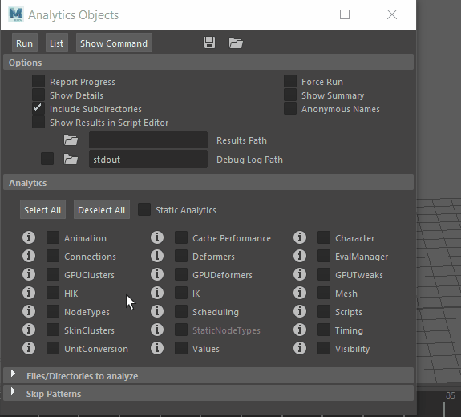

打开
“分析对象”(Analytics Objects)窗口
- 在“解算工具包”(Evaluation Toolkit)
的“调试”(Debugging)部分中，单击“启动分析窗口”(Launch Analytics Window)
“分析对象”(Analytics Objects)窗口包含每个设置的详细说明。单击设置旁边的信息图标 可查看更多详细信息。

- 运行(Run)
- 启动所选分析。
- 列表(List)
- 显示哪些分析将在帮助行(Help Line)中运行。
- 显示命令(Show Command)
- 显示分析命令详细信息。
- 保存(Save)
- 将当前配置保存在文件中。
- 加载(Load)
- 从文件打开配置设置。
选项
选择要在分析中包含哪些元素：
- 报告进度(Report Progress)
- 在分析运行时显示进度对话框。
- 强制运行(Force Run)
- 创建新的分析报告，即使旧报告可用。
- 显示详细信息(Show Details)
- 切换详细分析信息集合。
- 显示摘要(Show Summary)
- 激活以在分析输出中包含摘要。
- 包括子目录(Include Subdirectories)
- 激活以在选定数据目录中包含子目录。
- 匿名名称(Anonymous Names)
- 激活以匿名化文件名和节点。
- 在脚本编辑器中显示结果(Show Results in Script Editor)
- 激活以在脚本编辑器(Script Editor)中显示运行的测试列表。
- 结果路径(Results Path)
- 输入用于保存测试结果的目标位置。如果将此字段留空，则结果文件将存储在与测试文件相同的位置。
- 调试日志路径(Debug Log Path)
- 激活此选项以创建调试日志，并在该字段中输入用于保存日志文件的目标位置。（如果此选项处于活动状态但您未指定字段，则日志结果将保存在默认日志目录 stdout 中。）
分析(Analytics)
选择“全选”(Select All)或“取消选择全部”(Deselect All)，以在测试中包含或排除所有分析。
激活“静态分析”(Static Analytics)以独立于文件运行测试。
- 动画(Animation)
- 提供有关文件中动画的基本统计信息。
- 单击“i”按钮 以阅读有关此数据的其他详细信息。
- 缓存性能(Cache Performance)
- 提供有关缓存性能的统计信息。
- 单击“i”按钮 以阅读有关此数据的其他详细信息。
- 角色(Character)
- 检查场景中的角色以提供一些基本结构元素。
- 单击“i”按钮 以阅读有关此数据的其他详细信息。
- 连接(Connections)
- 提供 DG 中所有连接的报告。
- 单击“i”按钮 以阅读有关此数据的其他详细信息。
- 变形器(Deformers)
- 检查场景中的网格，并提供有关所使用变形器的报告。
- 单击“i”按钮 以阅读有关此数据的其他详细信息。
- EvalManager
- 提供有关解算图和场景中调度的信息。
- 单击“i”按钮 以阅读有关此数据的其他详细信息。
- GPUClusters
- 提供有关动画簇节点以及如何使用它们的信息。
- 单击“i”按钮 以阅读有关此数据的其他详细信息。
- GPUDeformers
- 提供有关动画变形器节点以及如何使用它们的信息。
- 单击“i”按钮 以阅读有关此数据的其他详细信息。
- GPUTweaks
- 提供动画调整节点的列表以及如何使用它们的信息。
- 单击“i”按钮 以阅读有关此数据的其他详细信息。
- HIK
- 扫描所有 HIK 连接，以找到无法识别的图案。
- 单击“i”按钮 以阅读有关此数据的其他详细信息。
- IK
- 分析场景中标准 IK 系统的结构和使用。
- 单击“i”按钮 以阅读有关此数据的其他详细信息。
- 网格(Mesh)
- 分析网格数据的数量和分布。
- 节点类型(Node Types)
- 收集场景中每个节点类型的数量。
- 单击“i”按钮 以阅读有关此数据的其他详细信息。
- 调度(Scheduling)
- 验证生成的调度图是否与 dbpeek 命令生成的图表类似。
- 单击“i”按钮 以阅读有关此数据的其他详细信息。
- 脚本(Scripts)
- 提供场景中脚本作业的数量。
- 单击“i”按钮 以阅读有关此数据的其他详细信息。
- SkinClusters
- 检查场景中的蒙皮簇节点是否具有驱动者点属性连接。
- 单击“i”按钮 以阅读有关此数据的其他详细信息。
- 静态节点类型(Static Nodes Types)
-
该选项目前已禁用。
- 单击“i”按钮 以阅读有关此数据的其他详细信息。
- 计时(Timing)
- 提供在不可见性解算器处于或不处于活动状态时分析器中的场景计时信息。
- 单击“i”按钮 以阅读有关此数据的其他详细信息。
- UnitConversion
- 收集使用单位转化节点的连接类型的统计信息。
- 单击“i”按钮 以阅读有关此数据的其他详细信息。
- 值(Values)
- 对使简单算法变复杂的栓值执行分析。
- 单击“i”按钮 以阅读有关此数据的其他详细信息。
要分析的文件/目录(Files/Directories to analyze)
在该区域中，您可以选择希望 Maya 在何处搜索要分析的数据。
- 使用当前场景(Use Current Scene)
- （默认情况下，此选项处于启用状态）。如果要让 Maya 使用位于其他位置的场景，请禁用此选项。
- 单击“新建”(New) 设置新文件路径，或单击“目录”(Directory) 设置新文件夹位置。
跳过模式(Skip Patterns)
输入应跳过的文件路径模式（采用 Python 正则表达式形式）。单击 以添加新的过滤器路径。